File: 000000.gt.txt (if the image is defective, simply delete all Arabic text and the line will be excluded)
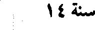
سنة 14
File: 000001.gt.txt (if the image is defective, simply delete all Arabic text and the line will be excluded)
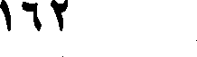
162
File: 000002.gt.txt (if the image is defective, simply delete all Arabic text and the line will be excluded)
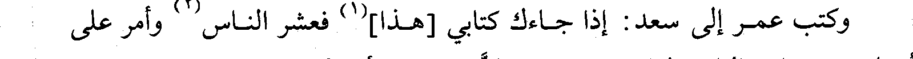
وكتب عمر إلى سعد: إذا جاءك كتابي [هذا](1) فعشر الناس(2) وأمر على
File: 000003.gt.txt (if the image is defective, simply delete all Arabic text and the line will be excluded)
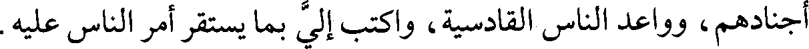
أجنادهم، وواعد الناس القادسية، واكتب إلي بما يستقر أمر الناس عليه.
File: 000004.gt.txt (if the image is defective, simply delete all Arabic text and the line will be excluded)
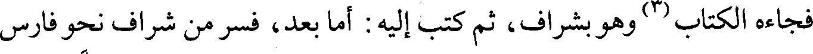
فجاءه الكتاب(3) وهو بشراف، ثم كتب إليه: أما بعد، فسر من شراف نحو فارس
File: 000005.gt.txt (if the image is defective, simply delete all Arabic text and the line will be excluded)
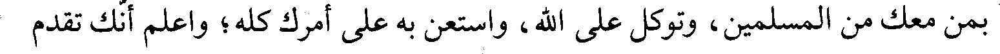
بمن معك من المسلمين، وتوكل على الله، واستعن به على أمرك كله؛ واعلم أنك تقدم
File: 000006.gt.txt (if the image is defective, simply delete all Arabic text and the line will be excluded)
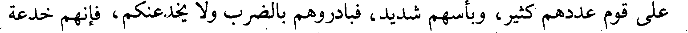
على قوم عددهم كثير، وبأسهم شديد، فبادروهم بالضرب ولا يخدعنكم، فإنهم خدعة
File: 000007.gt.txt (if the image is defective, simply delete all Arabic text and the line will be excluded)
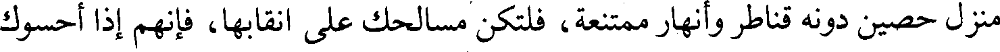
منزل حصين دونه قناطر وأنهار ممتنعة، فلتكن مسالحك على أنقابها، فإنهم إذا أحسوك
File: 000008.gt.txt (if the image is defective, simply delete all Arabic text and the line will be excluded)
رموك بجمعهم؛ فإن أنتم صبرتم لعدوكم ونويتم الأمانة، رجوت أن تنصروا عليهم، وإن
File: 000009.gt.txt (if the image is defective, simply delete all Arabic text and the line will be excluded)
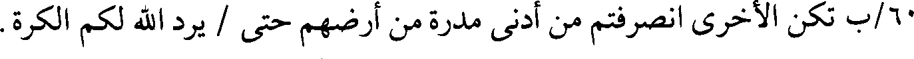
60/ب تكن الأخرى انصرفتم من أدنى مدرة من أرضهم حتى / يرد الله لكم الكرة.
File: 000010.gt.txt (if the image is defective, simply delete all Arabic text and the line will be excluded)
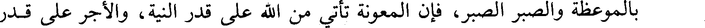
بالموعظة والصبر الصبر، فإن المعونة تأتي من الله على قدر النية، والأجر على قدر
File: 000011.gt.txt (if the image is defective, simply delete all Arabic text and the line will be excluded)
الحسبة، وأكثر من قول لا حول ولا قوة إلا بالله، وصف لي منازل المسلمين كأني أنظر
File: 000012.gt.txt (if the image is defective, simply delete all Arabic text and the line will be excluded)
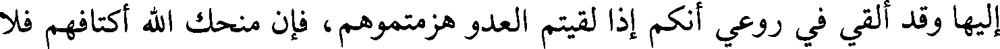
إليها وقد ألقي في روعي أنكم إذا لقيتم العدو هزمتموهم، فإن منحك الله أكتافهم فلا
File: 000013.gt.txt (if the image is defective, simply delete all Arabic text and the line will be excluded)
تنزع عنهم حتى تقتحم عليهم المدائن، فإنها خرابها إن شاء الله.
File: 000014.gt.txt (if the image is defective, simply delete all Arabic text and the line will be excluded)
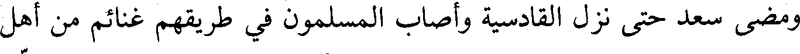
ومضى سعد حتى نزل القادسية وأصاب المسلمون في طريقهم غنائم من أهل
File: 000015.gt.txt (if the image is defective, simply delete all Arabic text and the line will be excluded)
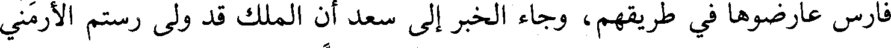
فارس عارضوها في طريقهم، وجاء الخبر إلى سعد أن الملك قد ولى رستم الأرمني
File: 000016.gt.txt (if the image is defective, simply delete all Arabic text and the line will be excluded)
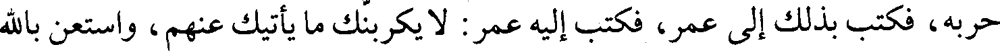
حربه، فكتب بذلك إلى عمر، فكتب إليه عمر: لا يكربنك ما يأتيك عنهم، واستعن بالله
File: 000017.gt.txt (if the image is defective, simply delete all Arabic text and the line will be excluded)
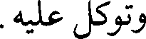
وتوكل عليه.
File: 000018.gt.txt (if the image is defective, simply delete all Arabic text and the line will be excluded)
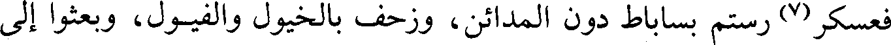
فعسكر(7) رستم بساباط دون المدائن، وزحف بالخيول والفيول، وبعثوا إلى
File: 000019.gt.txt (if the image is defective, simply delete all Arabic text and the line will be excluded)
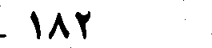
182
File: 000020.gt.txt (if the image is defective, simply delete all Arabic text and the line will be excluded)
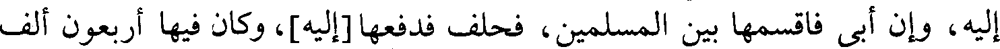
إليه، وإن أبى فاقسمها بين المسلمين، فحلف فدفعها[إليه]، وكان فيها أربعون ألف
File: 000021.gt.txt (if the image is defective, simply delete all Arabic text and the line will be excluded)
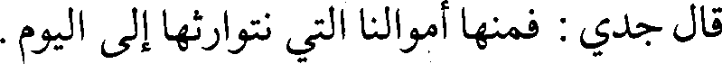
قال جدي: فمنها أموالنا التي نتوارثها إلى اليوم.
File: 000022.gt.txt (if the image is defective, simply delete all Arabic text and the line will be excluded)
قال علماء السير(1): ولما فرغ عتبة من الأبلة جمع له المرزبان [دست
File: 000023.gt.txt (if the image is defective, simply delete all Arabic text and the line will be excluded)
ميسان](2)، فسار إليه عتبة، وقيل لصاحب الفرات: إن ها هنا قوما يريدونك، فأقبل في
File: 000024.gt.txt (if the image is defective, simply delete all Arabic text and the line will be excluded)
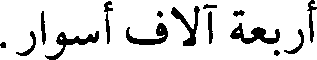
أربعة آلاف أسوار.
File: 000025.gt.txt (if the image is defective, simply delete all Arabic text and the line will be excluded)
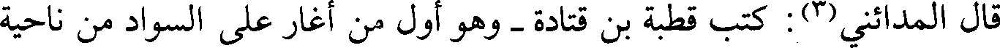
قال المدائني(3): كتب قطبة بن قتادة - وهو أول من أغار على السواد من ناحية
File: 000026.gt.txt (if the image is defective, simply delete all Arabic text and the line will be excluded)
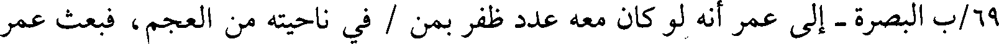
69/ب البصرة - إلى عمر أنه لو كان معه عدد ظفر بمن / في ناحيته من العجم، فبعث عمر
File: 000027.gt.txt (if the image is defective, simply delete all Arabic text and the line will be excluded)
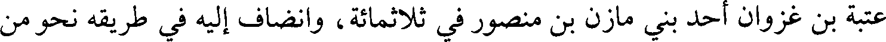
عتبة بن غزوان أحد بني مازن بن منصور في ثلاثمائة، وانضاف إليه في طريقه نحو من
File: 000028.gt.txt (if the image is defective, simply delete all Arabic text and the line will be excluded)
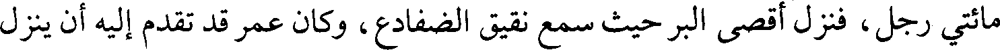
مائتي رجل، فنزل أقصى البر حيث سمع نقيق الضفادع، وكان عمر قد تقدم إليه أن ينزل
File: 000029.gt.txt (if the image is defective, simply delete all Arabic text and the line will be excluded)
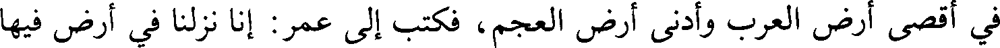
في أقصى أرض العرب وأدنى أرض العجم، فكتب إلى عمر: إنا نزلنا في أرض فيها
To Save: `Ctrl+s`, make sure to choose `Webpage, complete`!